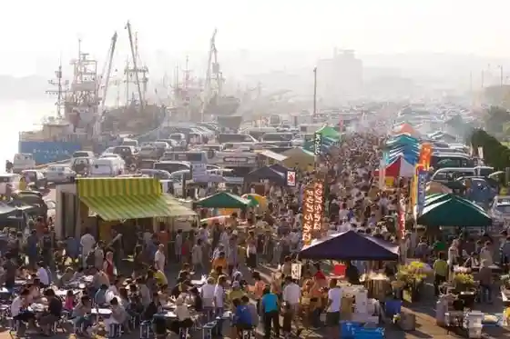
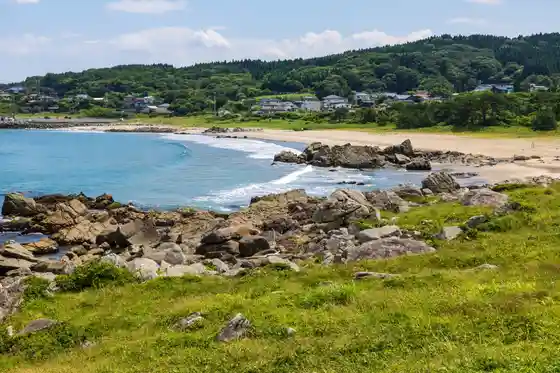
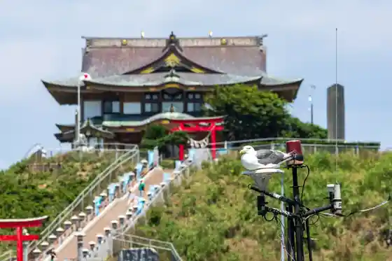
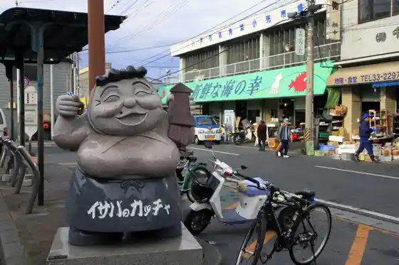

Hasshoku Center
Hachinohe, Aomori · 0178-28-9311 · Official / source link
2026 (Reiwa 8) Kan Hana Ganpeki Asa City
Hachinohe, Aomori · 070-2004-6524 · Official / source link

Tanesashi Coast
Hachinohe, Aomori · 0178-46-4040 · Official / source link

Kabura Shima
Hachinohe, Aomori · 0178-34-2730 · Official / source link

Michinoku Minato Ekimae Asa City
Hachinohe, Aomori · 0178-33-6151 · Official / source link

Hachinohe Yatai Village Miroku Alley
Hachinohe, Aomori · 0178-38-3692 · Official / source link
Hachinohe Park (Kodomo no Kuni Botanical Garden)
Hachinohe, Aomori · 0178-96-2932 · Official / source link
Ashige Saki Lookout
Hachinohe, Aomori · 0178-43-9252 · Official / source link
Hachinohe Maizo Bunkazai Center Korekawa Jomon Kan
Hachinohe, Aomori · 0178-38-9511 · Official / source link
Michinoku Hassen (Hachinohe Shuzo)
Hachinohe, Aomori · 0178-33-1171 · Official / source link
Michi no Ku Shiokaze Toreiru (Tanesashi Kaigan Kukan)
Hachinohe, Aomori · 0178-51-8500 · Official / source link
Hachinohe Art Museum
Hachinohe, Aomori · 0178-45-8338 · Official / source link
Nambu Sembei Teyaki Ki Experience
Hachinohe, Aomori · 0178-70-1110 · Official / source link
Yama no Raku Ko (Hachinohe Aoba Mizumi Tembo Koryu Shisetsu)
Hachinohe, Aomori · 0178-82-2222 · Official / source link
Gu Land Sanpia Hachinohe
Hachinohe, Aomori · 0178-23-5151 · Official / source link
Sanpachi Shiro Park Hachinohe Castle Ruins
Hachinohe, Aomori · 0178-43-9141 · Official / source link
Kanko Yuransen Hayabusa Ⅱ
Hachinohe, Aomori · 090-7332-9515 · Official / source link
Hachinohe Potaru Museum Hatchi
Hachinohe, Aomori · 0178-22-8228 · Official / source link
Kushibiki Hachiman Shrine
Hachinohe, Aomori · 0178-27-3053 · Official / source link
Hachinohe Museum
Hachinohe, Aomori · 0178-44-8111 · Official / source link
Hachinohe Buiyabesufesuta
Hachinohe, Aomori · Official / source link
Yutorii
Hachinohe, Aomori · 0178-70-1110 · Official / source link
Aoba Mizumi
Hachinohe, Aomori · 0178-82-2111 · Official / source link
Tanesashi Kaigan Infomeshon Center
Hachinohe, Aomori · 0178-51-8500 · Official / source link
Hachinohe Suisan Science Museum Mariento
Hachinohe, Aomori · 0178-33-7800 · Official / source link
Nambu Retsu Shoku Experience
Hachinohe, Aomori · 0178-70-1110 · Official / source link
Michiru Tanesashi
Hachinohe, Aomori · 0178-70-5256 · Official / source link
Ho Kaze Art Museum
Hachinohe, Aomori · 0178-20-1335 · Official / source link
Historic Site Nejiro no Plaza
Hachinohe, Aomori · 0178-41-1726 · Official / source link
Nagane Okunai Su Ga to Ba (YS Ariina Hachinohe)
Hachinohe, Aomori · 0178-43-9544 · Official / source link
Hachinohe Bukku Center
Hachinohe, Aomori · 0178-20-8368 · Official / source link
Kabura Shima Bussan Hambai Shisetsu (Kabunya)
Hachinohe, Aomori · 0178-43-9536 · Official / source link
Nambu Hishi Toge Experience
Hachinohe, Aomori · 0178-70-1110 · Official / source link
Roadside Station Nango (Guriin Plaza Nango)
Hachinohe, Aomori · 0178-82-2902 · Official / source link
Korekawa Sekkijidai Iseki
Hachinohe, Aomori · 0178-38-9511 · Official / source link
Tanesashi Campground
Hachinohe, Aomori · 0178-51-8500 · Official / source link
Fukuichi Man Kokuzo Bosatsu Do
Hachinohe, Aomori · 0178-83-2434 · Official / source link
Shimin Forest Fu Shu Gaku
Hachinohe, Aomori · 0178-83-2146 · Official / source link
Samekado Lighthouse
Hachinohe, Aomori · 0178-43-9536 · Official / source link
Kogan Lookout
Hachinohe, Aomori · 0178-43-9536 · Official / source link
Choja Yama Shiragi Shrine
Hachinohe, Aomori · Official / source link
Hachinohe Shichokaku Center Jido Science Museum
Hachinohe, Aomori · 0178-45-8131 · Official / source link
Hachinohe Nango Folk History Museum
Hachinohe, Aomori · 0178-83-2443 · Official / source link
Hachinohe Yakatabune Araida Maru
Hachinohe, Aomori · 0178-35-4415 · Official / source link
Nango Asa Moya Village
Hachinohe, Aomori · 0178-80-8088 · Official / source link
JAZZ no Kan
Hachinohe, Aomori · 0178-82-2902 · Official / source link